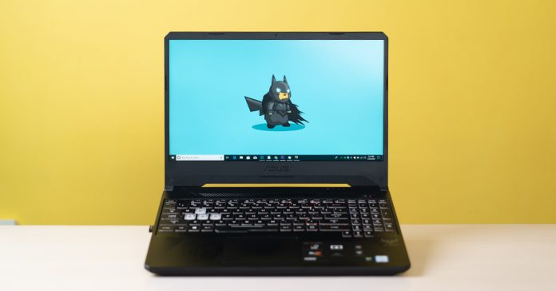

What’s the first thing that comes to your mind about a gaming laptop? Bulky, heavy, rad, and more importantly expensive! But why does that have to be the case though? Just a couple of years back, gaming enthusiasts had to sacrifice a lot If they opted for a gaming laptop on a tight budget. Constraints on aspects like build quality, hardware, and all meant the experience just wasn’t worthwhile. However, that’s gradually changing.
In 2019, we saw so many great budget and midrange gaming laptops, and I was fortunate enough to review some of them as well. Now, 2020 is looking to be a revolutionary year for laptops because of all the exciting announcements that we saw during CES 2020 a couple of weeks ago. Though the folding and dual displays sure sound exciting, the thing I’m hyped for the most is AMD’s new Ryzen 4000 series mobile CPUs.
And while it’s going to take some time for a Ryzen 4000 powered laptop to arrive in Nepal, today I am going to talk about the best budget laptop under 1 lakh in Nepal — the Asus TUF FX505GT laptop. It is powered by a 9th gen Intel Core processor alongside the NVIDIA GTX 1650 graphics. It has been my primary device for a month or so now and I genuinely think this is one of the best in its class. But of course, Asus has made some compromises for cost reduction. Let’s find out all about this device in our review!
Operating System: Windows 10 Home Display: 15.6″ (16:9) LED-backlit FHD (1920×1080) 60Hz Anti-Glare IPS-level Panel Processor: Intel Core i5-9300H Graphic: NVIDIA GeForce GTX 1650, with 4GB GDDR5 VRAM RAM: 8GB DDR4 2400MHz Storage: 512GB PCIe Gen3 SSD WebCam: HD 720p CMOS module Wi-Fi: Integrated Wi-Fi 5 (802.11 ac) Bluetooth: Bluetooth® 5.0 Battery: 3-Cell 48 Wh Battery Dimensions: 360.4 x 262.0 x 25.8 ~26.8 mm (WxDxH) Weight: 2.2 kg ~ 2.3 kg